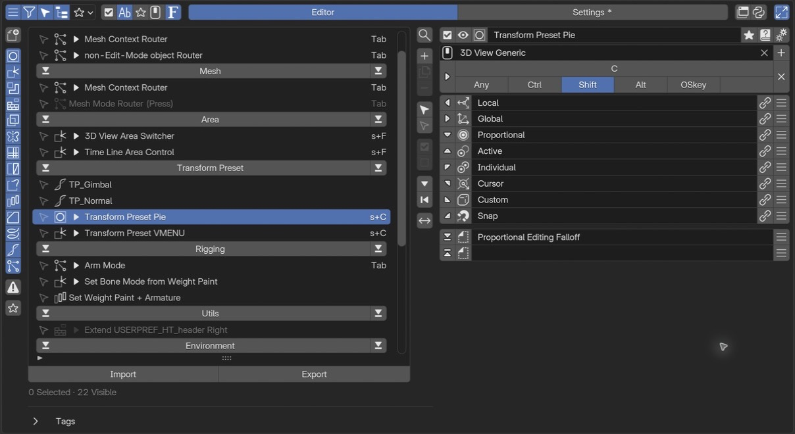

エディターの共通要素¶
PME の編集は、一覧で対象を選び、右側でその設定と中身を編集する流れです。 メニュー種別によって右側の設定は変わります。ここでは実用的な Pie Menu の設定画面を例に、共通する操作を説明します。
画面全体から探す¶

1編集画面の機能・状態Show List、Filter、Select Mode、Tree Mode とグループ分けを切り替えます。 2一覧の表示項目有効状態・名前・タグ・Keymap・ホットキーの列を表示するか選びます。 3Editor / Settingsメニューを編集する画面と、PME 全体の設定画面を切り替えます。 4補助機能と表示領域Interactive Panels、Debug Mode、Maximize Preferences の3つです。 5メニュー一覧編集するメニューを選びます。タグ別の表示では、同じメニューが複数グループに現れることがあります。 6追加と管理＋からメニュー種別を選びます。一覧の下には Import / Export があります。 7選択メニューの設定名前・有効状態・詳細設定と、対応する種別では Keymap / Hotkey を編集します。 8メニューの中身この例は Pie Menu の 8 方向と追加 2 スロットです。別の種別では分岐やプロパティの設定に変わります。編集画面の機能・状態：一覧やフィルター、選択モード、ツリー表示を切り替える。
一覧の表示項目：一覧に表示する列を選ぶ。
Editor / Settings：編集画面と PME 全体の設定画面を切り替える。
補助機能と表示領域：Interactive Panels、Debug Mode、Maximize Preferences を切り替える。
メニュー一覧：編集するメニューを選ぶ。
メニューの追加と管理：追加、複製、Import / Export などを行う。
選択メニューの設定：名前、呼び出し方、詳細設定を編集する。
メニューの中身：スロットや分岐など、種別ごとの内容を編集する。
上部バーの4つのまとまり¶
最上部は、左から順に次の4つの役割に分かれます。 選択中のメニューの名前・有効状態・詳細設定は、その下の行にあります。
1. 編集画面の機能・状態¶
左端のブロックは、編集画面で使う機能と表示モードを切り替えます。
操作 |
役割 |
|---|---|
Show List（三本線） |
メニュー一覧の表示・非表示。OFF にすると選択中のメニューの編集欄を広く使える。対象を切り替えるときは ON に戻す |
Filter（漏斗） |
一覧のフィルターを有効・無効にする。見つからないメニューがあるときは、削除されたと判断する前にフィルターを確認する |
Select Mode（矢印） |
複数メニューを選んでまとめて操作するモード。通常の、編集対象を一つ選ぶ操作とは異なる |
Tree Mode（ツリー） |
メニューの関係をツリーで表示する |
Group by（画像では星と下向き矢印） |
Tree Mode でのグループ分け。None / Keymap / Type / Tag / Key から選ぶ。アイコンは選択項目によって変わる |
Show List を OFF にすると、このブロックの残りの操作と、次の「一覧の表示項目」も隠れます。
2. 一覧の表示項目¶
チェックボックスから F までの5つは、メニュー一覧にどの情報を表示するかを選ぶボタンです。
ボタン |
一覧に表示する情報 |
|---|---|
チェックボックス |
各メニューの有効・無効の欄 |
Ab |
メニュー名 |
星 |
タグ |
マウス |
Keymap 名 |
F |
ホットキー |
上部バーのチェックボックスを OFF にしても、メニュー自体を無効にはしません。 有効状態を変える操作は、一覧の各行や選択メニューの設定にあるチェックボックスです。 名前とホットキーは両方を非表示にできません。一方が非表示のときに他方も OFF にすると、先に隠していた方が自動で表示されます。
3. Editor / Settings¶
中央の大きな切り替えは、作業する画面を選びます。 Editor ではメニューの設定と中身を編集し、Settings では PME 全体の設定を変更します。 たとえば、スロットの操作ボタンを展開する Expand Slot Tools は Settings > General にあります。
4. 補助機能と表示領域¶
右端の3つは、次の補助機能です。
操作 |
役割 |
|---|---|
Interactive Panels（パネル） |
Blender のパネルなどに PME の編集用ボタンを表示する。Interactive Panels を参照 |
Debug Mode（Python） |
Blender の |
Maximize Preferences（拡大） |
Preferences 内の表示を PME 用に広げる |
Show List は PME 内の一覧、Maximize Preferences は Preferences 内で PME が使う表示領域を調整します。 Blender のエリア自体を最大化する操作とは別です。
メニューの追加と管理¶
一覧のそばの ＋ からメニュー種別を選んで追加します。複製やその他の管理操作も一覧のツールから行います。 作成する種別によって右側の設定項目が変わるため、先に「何を作るか」を選びます。
一覧の下の Import / Export は設定ファイルを読み書きする入口です。 既存の設定を例として取り込んだ場合も、呼び出すメニューや外部スクリプトが揃っているかを確認してください。 保存先は 保存先とフォルダ構成 にまとめています。
選択メニューの設定¶
右側の上部には、選択したメニューの名前と、表示・呼び出しに関する設定があります。 まず名前と有効状態を確認し、ホットキーが必要な種別では呼び出す場所とキーを設定します。 詳細設定は必要に応じて開きます。
右側の編集欄の上部、メニュー名の左右に並ぶ操作です。表示する項目はメニュー種別によって異なります。
- 有効/無効:
メニュー全体を有効化/無効化します。無効化すると hotkey だけでなく、
open_menu()/pme.invoke_pm()などのスクリプト経路、登録済みメニューやパネル経路（Extend Panel / Side Panel / Hidden Panel Group）からも実行されなくなります。
hotkey だけを外したい場合は、メニューを無効化するのではなく Hotkey 設定 を編集してください。- プレビュー:
対応するメニューをその場で開き、レイアウトや並びを確認します。通常のメニュー呼び出しを使うため、項目を操作するとコマンドや値の変更が実行され得ます。表示だけの安全な試運転として扱わず、実際に使うエディターからの呼び出しも確認してください。Property の値を操作する Preview は、Property Editor の専用欄です。
- メニュー選択:
編集対象のメニューを切り替えます。アイコンは現在のメニュー種別（Pie / Popup / Regular / Modal …）を示します。検索や種別フィルターで絞り込んだ一覧が出ます。
- メニュー名:
メニューの名前です。表示用ラベルであると同時に、他のメニューや Python コードからこのメニューを呼び出すときの識別子になります。
open_menu("名前")で呼び出す場合も、ここで設定した名前を使います。
Menu スロットのリンクや Pop-up Dialog / Floating Panel の Dialog リンクは、メニューの名前を変更しても参照を維持します。一方で、Command / Custom にopen_menu("名前")/draw_menu("名前")と書いた箇所は、その文字列で呼び出します。メニュー名を変更したら、これらのコードも合わせて確認してください。- 被参照ボタン:
このメニューを参照している別のメニューがある場合に表示されます。クリックすると参照元の一覧が出て、そこからジャンプできます。Macro から別の Sticky Key を呼んでいる、Regular Menu のスロットから Pop-up Dialog を呼んでいる、といった依存関係を追うときに使います。
- Tag:
メニューの分類・検索用ラベルです。クリックするとタグ編集ポップアップが開き、複数のタグを付けられます。
Tag を付けておくと、Pie Menu Editor の一覧画面で 絞り込み・グループ表示ができ、pm_enable_by_tag("名前", True)でセット単位での有効化にも使えます。Settings > General > Auto-Tag New Menus を有効にすると、現在のタグフィルタで新規メニューに自動でタグが付きます。- ドキュメント:
PME のオンラインドキュメント（このサイト）の該当ページを開きます。
- 詳細設定トグル:
Description（説明文）・Poll（実行可否）・そしてエディターごとの追加オプションのパネルを開閉します。詳細設定を持たないエディター（Hidden Panel Group）もあります。
Hotkey 設定¶
ホットキーに対応するメニューで、呼び出す場所とキー操作を設定します。Property のように値を定義する種別では、この欄はありません。

Keymap 設定¶
ホットキーを使う場所を選びます。入力欄で Keymap を検索して登録できます。複数の Keymap に登録する場合は、右側の ＋ ボタンから追加します。
追加候補の括弧内に表示されるのは、その Keymap ですでに同じキーの組み合わせに割り当てられている操作名です。
Blender の Keymap はエディターやモードごとに分かれ、階層を持ちます。詳しくは Keymapの選び方 を参照してください。
Hotkey Mode¶
左端のボタンで、どの操作をきっかけに開くかを選びます。
モード |
起動する操作 |
|---|---|
Press |
キーを押す |
Hold |
キーを押し続ける |
Click Drag |
キーを押しながらマウスを動かす |
Double Click |
キーを2回続けて押す |
Key Chords |
起動キーに続けて、設定した Chord キーを押す |
選択できるモードはメニュー種別によって異なります。Key Chords では、続けて押す Chord キーの入力欄が追加されます。
Settings > Hotkeys > Experimental Modes を有効にすると、Click (Experimental) と Click Drag (Experimental) も選べます。これらは Blender 標準のクリック／ドラッグイベントを使います。既存のキー割り当てとの競合や、期待どおりに起動しない場合があるため、Keymap とイベントの扱いを理解した上で使用してください。設定は Experimental Modes を参照してください。
キーと修飾キー¶
上段で起動キーを設定し、下段で一緒に押す修飾キーを選びます。画像の設定は Shift + C です。
項目 |
設定すること |
|---|---|
キー |
入力欄をクリックして、割り当てるキーを押す |
Ctrl / Shift / Alt / OSKey |
起動キーと一緒に押す修飾キー。複数を組み合わせられる |
Any |
Ctrl / Shift / Alt / OSKey の押下状態を問わず、起動キーに反応する |
マウスボタンを修飾キーとして組み合わせることもできます（例：LMB + Tab / RMB + Tab / MMB + Tab）。設定例は マウスとホットキーの動画 を参照してください。
関連ページ
キーマップの選び方 — Keymap の階層と、PME のホットキーがその中でどう解決されるか
Keymap の重複の確認 — 既存のホットキーと衝突したときの調べ方
スロット一覧¶
スロットは「メニューを構成する 1 つ 1 つの項目」です。たとえば Pie Menu の 8 方向それぞれや、Pop-up Dialog のボタン 1 つ 1 つはすべて 1 スロットです。
スロットの並びはエディターによって少しずつ意味が違います。
数が固定されているもの: Pie Menu は 10 スロット（8 方向 + 上 + 下）、Sticky Key は 2 スロット（On Press と On Release）
数を自由に増減できるもの: Pop-up Dialog、Regular Menu、Stack Key、Macro Operator、Modal Operator
並びそのものに意味があるもの: Macro Operator はスロットの順序が実行順になります。Modal Operator は「呼び出された時」「確定時」「取消時」といったタイミング用のスロットを混在させます。
具体的な並びと意味は、各エディターの専用ページを参照してください。
Pie Menu などの通常のスロットには、次の操作が用意されています。表示する項目は種別によって異なります。
スロット編集ボタン — スロットエディタを開いて中身を設定します
アイコン — スロットに表示するアイコンを選択します
表示名 — スロットのラベルテキストを設定します
詳細設定 — スロットごとの追加オプション
Expand Slot Tools¶
Settings > General > Expand Slot Tools を ON にすると、各スロット右端のメニューにある操作が、直接押せるアイコンとして並びます。 スロットの内容や実行方法を変更する設定ではありません。
Pie Menu では Edit Slot / Copy / Move Slot / Enabled・Disabled / Clear が並び、 スロットをコピー済みの場合は Paste も表示されます。 Move Slot は Pie Menu の固定された位置の間で中身を交換し、Clear はその位置を空にします。 使える操作はエディター種別とスロットの状態によって異なります。
展開した状態は Pie Menu の画面 で確認できます。 OFF に戻すと、これらの操作はスロット右端のメニューにまとまります。
スロットエディタ¶
スロット編集ボタンを押すと、スロットエディタが開きます。 上部で名前などを設定し、対応するタブでスロットタイプを選びます。関数や条件など、種別専用の編集欄は各エディターの説明を参照してください。

上部の共通操作¶
アイコン: スロットに表示するアイコンを選びます。Custom Icon を使う場合は Custom Icons を参照してください。
表示名: スロットのラベルテキストです。 を押すと、現在の設定から候補名（Suggested name）を自動的に当てはめます。
OK / Cancel: スロットの編集を確定 / 取消します。Enter / Escape キーでも同じ操作ができます。
スロットタイプ¶
スロットには 5 種類のタイプがあり、何を行うスロットかをタイプで決めます。 そのエディターが対応しているタイプだけがタブとして表示されます。特殊な入力欄を持つ種別もあるため、各エディターで使えるタイプは、それぞれの専用ページを確認してください。
次のタブで、それぞれの設定内容を確認できます。
項目を実行したときに評価する Python コードを設定します。 オペレーターを呼び出す場合は、実行するエディター・モード・選択状態に対応した処理を使います。
# 3D Viewport の Object Mode で立方体を追加する
bpy.ops.mesh.primitive_cube_add()
コマンドの記述方法
入力上限は UTF-8 で 1,024 バイトです。日本語を含む場合、1,024 文字より短くなります。
短い単純文は ; で区切れますが、インデントを持つブロックを機械的に 1 行へ変換しないでください。
長さの確認と外部スクリプトへの分割は Command / Custom のコードと入力制限 を参照してください。
グローバル変数
利用可能なグローバル変数の例：
C: PME がスクリプトに提供するコンテキストO: bpy.ops（Blenderのオペレーター）E: event（イベント情報）
Scripting Reference でグローバル変数の説明を確認できます。
オブジェクトのプロパティへのパスを指定し、ウィジェットとして表示します。
例：bpy.context.object.locationでオブジェクトの位置を表示・編集できます。
tool_props() で参照するツール設定は、対象のエディター・モード・ツールで利用できる間だけ表示します。
それ以外のときは非表示になります。表示条件や代替表示を指定する場合はCustomタブを使います。
関数の引数はAPIリファレンスを参照してください。
高度なプロパティ操作
インデックス指定やより複雑なプロパティ操作が必要な場合は、Property Editorを利用してください。
ボタンがクリックされた時にPME内で作成した他のメニューアイテムを呼び出します。 例：
Popup Dialogを
Expand Popup Dialogで表示Regular Menuを
Open on Mouse Overで表示Macro Operatorを実行
ボタンがクリックされた時に、指定されたBlenderのホットキーに割り当てられているオペレーターを検索して実行します。
例：GでGrab（移動）、RでRotate（回転）など、Blenderの標準ホットキーを利用できます。
UI を描画するときに評価する Python コードを設定します。
L はレイアウトオブジェクトで、Blender のレイアウト API を使って UI を構築できます。
再描画でも実行されるため、オブジェクトの追加・削除などの処理を直接書かず、
その処理を実行するボタンを配置します。
# ボックス内にラベルを表示
L.box().label(text="メッシュを追加")
# 複数のボタンを縦に配置
col = L.column(); col.operator("mesh.primitive_cube_add", text="立方体"); col.operator("mesh.primitive_uv_sphere_add", text="球")
上は独立した二つの例です。Pie Menu の 1 スロットに複数の UI 要素を置く場合は、 二つ目の例のように、一つの column や box の中にまとめてください。 パイのレイアウト直下へ複数の要素を追加すると、後続スロットの方向がずれる原因になります。
入力上限は UTF-8 で 1,024 バイトです。 Command / Custom のコードと入力制限 で、 長さ、複数行、外部スクリプトの扱いを確認できます。
スロットを追加する（プリセット）¶

一番右のハンバーガーメニュー()を押すと、あらかじめ用意されたいくつかのスロット機能を追加することができます。
詳細設定¶
選択メニューの歯車ボタンから開きます。表示する項目は種別によって異なります。 Description は説明文、Poll は利用できる条件です。さらに Pie Menu の Radius、Stack Key の Remember Slot / Advance On などの固有設定が並びます。
メニューやスロットのツールチップに表示する説明を設定します。
通常は文章をそのまま入力します。右のスクリプトトグル を ON にすると、
return で説明文を返す Python コードを入力できます。
return f"Active: {C.active_object.name if C.active_object else '(none)'}"
この例は現在のアクティブオブジェクト名を表示し、対象がない場合は (none) と表示します。
Python で説明を返すとき
returnが必要です。 文字列の式を置くだけでは、その文字列は説明として返りません。コードは説明が求められたときに評価されます。メニュー項目のクリック時に実行する Command とは別です。
現在の状態を読む用途に使います。オブジェクトの追加・削除や設定の変更などは Command 側に置いてください。
Noneを返す、または評価に失敗した場合は独自の説明が使われず、既定のツールチップに戻ります。エラーはコンソールに報告されます。
通常の説明文では、\n を入れるとツールチップ内で改行できます。
メニュー呼び出しの説明を設定していない場合は、呼び出すメニュー名が表示されます。
- Poll:
「今の Blender の状態で、このメニューを実行してよいか」を Python の式で判定する仕組みです。式の戻り値が
Trueならメニューが実行され、Falseなら hotkey や UI から呼ばれてもスキップされます。ao = C.active_object; return ao and ao.type == 'MESH'
Poll は hotkey 経由の呼び出しだけでなく、HOLD / TWEAK / CHORD、
open_menu()/pme.invoke_pm()などのスクリプト経路、editor preview、Popup Dialog や通常メニューの描画、Macro / Modal / Sticky / Floating Panel からの呼び出しでも確認されます。設定しておけば、現在の context では使えないメニューが別経路から実行されてしまうケースを防げます。右の から、よく使う条件をその場で追加できる Poll 補助メニューが開きます（モード判定・空 Poll の挿入・Cut / Copy / Paste など）。条件の書き方の入口は Poll Method の基礎 にまとめてあります。
固有オプションの説明は各エディターの専用ページにあります。
このページに含まれない要素¶
次のものは「共通要素」ではなく各エディター固有の機能です。それぞれのエディターの専用ページに書きます。
Pie Menu の Radius / Threshold / Confirm Threshold / Confirm on Release
Pop-up Dialog のレイアウト（行・列・サブ行）、Pie / Dialog / Popup のモード、固定列、配置
Modal Operator の On Invoke / On Confirm / On Cancel / On Update スロット、Confirm on Release、Block UI、Lock
Macro Operator のサブメニュー指定（Sticky Key / Macro / Modal の入れ子）、診断表示
Stack Key の Remember Slot / Advance On (Every Press / Quick Repeat) / Repeat Timeout / Undo Previous Command
Sticky Key の On Press / On Release ペア、Save and Restore Previous Value ジェネレータ
Property Editor の型・保存先・Property ID・Getter / Setter
Property Stack の条件と状態、Context Router の分岐と対象外の動作
参考動画（原作者のチャンネル）¶
roaoao の動画一覧より。旧版の UI・手順を扱う参考動画です。